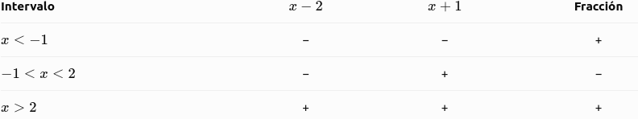
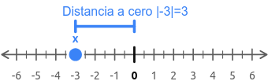

Inecuaciones racionales
Son desigualdades en las que aparece una fracción algebraica, es decir, una fracción que contiene polinomios con incógnitas en el numerador o en el denominador.
Ejemplo:
\( \dfrac{x-2}{x+1}>0 \)
¿Cómo se resuelven?
- Igualamos a cero el numerador y el denominador para encontrar los puntos críticos.
- Marcamos esos puntos en la recta real y estudiamos el signo de cada intervalo.
- Elegimos los intervalos que cumplen la desigualdad.
- Excluimos siempre los valores que anulan el denominador, porque no se puede dividir entre cero.
Importante: los puntos que anulan el numerador pueden incluirse si la desigualdad contiene \(\leq\) o \(\geq\), pero nunca se incluyen los que anulan el denominador.
Resolvemos paso a paso:
\( \dfrac{x-2}{x+1}>0 \)
Paso 1. Encontramos los puntos críticos.
Igualamos el numerador y el denominador a cero:
- Numerador: \(x-2=0 \Rightarrow x=2\).
- Denominador: \(x+1=0 \Rightarrow x=-1\).
El valor \(x=-1\) no puede formar parte de la solución, porque anula el denominador.
Paso 2. Dividimos la recta real en intervalos.
Los puntos \(-1\) y \(2\) forman tres intervalos:
\( (-\infty,-1),\quad(-1,2),\quad(2,+\infty) \)
Paso 3. Estudiamos el signo de la fracción.

Paso 4. Elegimos los intervalos que cumplen la desigualdad.Buscamos los valores para los que la fracción es positiva, ya que tenemos el signo \(>0\).
La solución es:
\( \boxed{x\in(-\infty,-1)\cup(2,+\infty)} \)
No incluimos \(x=-1\), porque anula el denominador, ni \(x=2\), porque la desigualdad es estricta.
Inecuaciones con valores absolutos
Son desigualdades en las que aparece el valor absoluto de una expresión, representado por dos barras: \(|\ |\).
El valor absoluto representa la distancia de un número al cero y, por tanto, siempre es positivo o cero.
\(|x|\)
Por ejemplo:
\(\lvert \text{-3} \rvert = \text{3}\)

Para resolverlas, utilizamos estas reglas, donde \(a>0\):
- Si \(|x|<a\), entonces \(-a<x<a\).
- Si \(|x|>a\), entonces \(x<-a\) o \(x>a\).
Ejemplos:
Si \(|x|<3\):
\( -3<x<3 \)
La solución son los números comprendidos entre \(-3\) y \(3\), sin incluirlos.
Si \(|x|>3\):
\( x<-3 \quad \text{o} \quad x>3 \)
La solución son los números menores que \(-3\) o mayores que \(3\).
Recuerda: con el signo menor, la solución queda entre dos valores; con el signo mayor, queda fuera de ellos.
A más nivel de detalle:
Ejemplo A: \(|x|<3\)
Paso 1. Aplicamos la propiedad del valor absoluto.
Si el valor absoluto es menor que un número positivo, la incógnita queda entre su opuesto y ese número:
\( -3<x<3 \)
Paso 2. Escribimos la solución.
\( \boxed{x\in(-3,3)} \)
Son todos los números comprendidos entre \(-3\) y \(3\), sin incluir los extremos.
Ejemplo B: \(|x|>3\)
Paso 1. Aplicamos la propiedad del valor absoluto.
Si el valor absoluto es mayor que un número positivo, la incógnita queda fuera del intervalo:
\( x<-3\quad\text{o}\quad x>3 \)
Paso 2. Escribimos la solución.
\( \boxed{x\in(-\infty,-3)\cup(3,+\infty)} \)
Son todos los números menores que \(-3\) o mayores que \(3\), sin incluir los extremos.